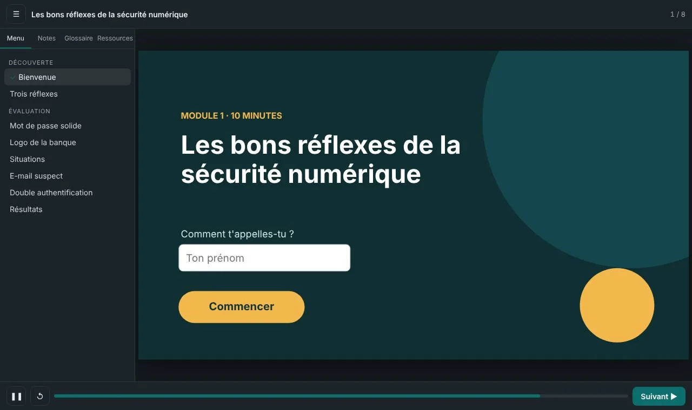
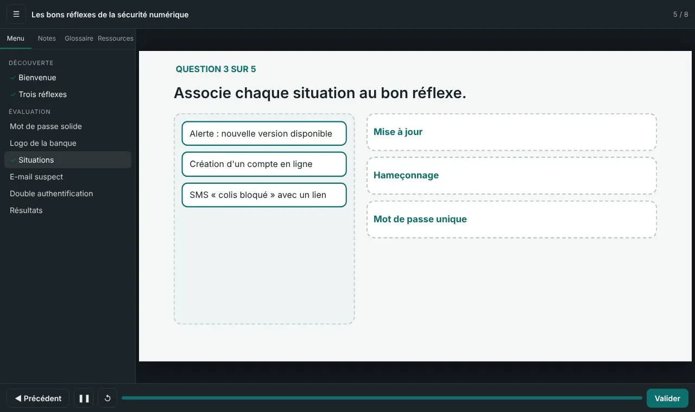
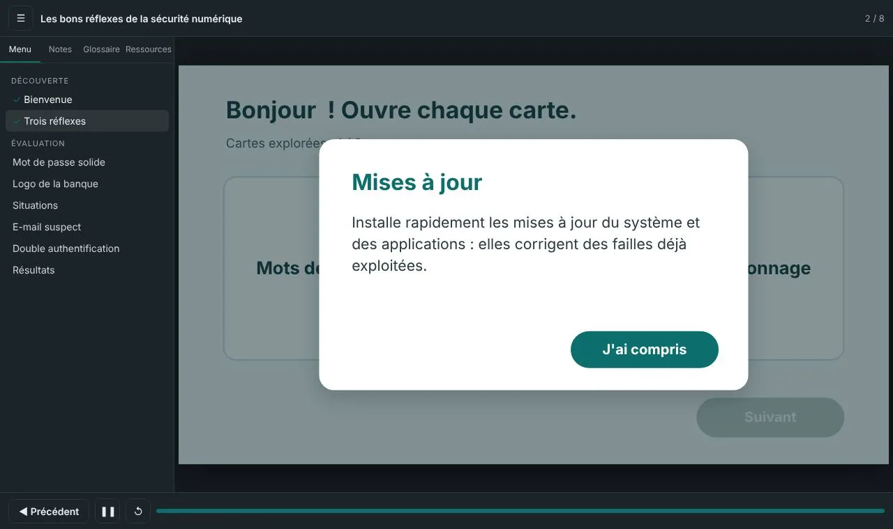

Awareness training · iLab TN internship, 2026
Cybersecurity essentials
A short module that helps non-specialist employees recognize the most common risks and adopt three simple habits. Learners alternate between free exploration and practice, then finish with a scored assessment.
Learning objectives
- IDENTIFYa phishing message from concrete clues
- CHOOSEa strong password among several options
- APPLYthe right response sequence to a suspicious email
Design decisions
- Card-based exploration: learners move on once they have opened all three topics.
- Personalization with the learner's first name to build engagement from the start.
- Five question formats (multiple choice, true/false, drag and drop, sequencing, fill in the blank) to check different levels of understanding.
- Instant feedback after each answer, with a second attempt on the trick question.
- Glossary, notes and resources available at any time in the player.